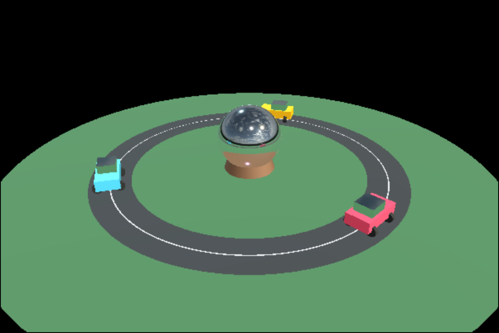
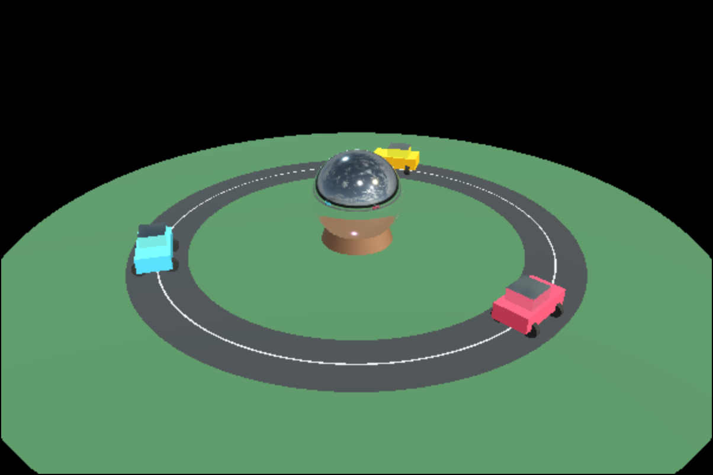

Page 13: Dynamic Environment Maps
A particularly useful kind of texture is an environment map - we used these for backgrounds, lighting, and reflections.
Using traditional environment maps for reflections has the problem that it only captures the static background in the environment map: it does not have the objects in the scene. The solution, of course, is to use the dynamic texture idea: we take a picture of the world and use it as the environment map. We need to use a special “360” camera to take a surround picture. And, of course, three.js makes this convenient: it provides a special CubeCamera that takes 6 pictures, one in each direction. You can make a CubeCamera to take a picture of the scene, and use its renderTarget as an environment map.
A dynamic environment map is cool: by taking the picture where an object is, you can create reflections (or lighting) based on what the object actually sees - not what was pre-loaded in the texture map. And, they are really easy because they are practically built into THREE.
In this demo, cars drive around a circular track and a mirrored sphere sits in the center. The button below the canvas switches between:
- a static reflection from the EXR map (the environment map is loaded from a single “EXR” file - this is the standard high-dynamic range image format used for environment maps), and
- a dynamic reflection using a per-frame
CubeCameraupdate.
Notice how the static environment map is missing the green disc and brown base (of the sphere), and the cars. Once we have a dynamic environment map, these objects can be seen in the reflection.
So, we can have a mirror that actually reflects what’s going on in the scene. There are some limitations: for example, it is an environment map, so all reflections are from the single eye point of the camera. And, we had to draw the scene seven times (one for each face of the cube map, one for the final image).
In principle, you could create a dynamic environment map for each object that sees what the object would really see. In practice, this becomes a performance problem quickly. Therefore, the reflections are often made from “the center of the room.”
Here is a second version that makes each car’s upper box reflective and switches between:
- one shared dynamic environment map centered at the mirror sphere, and
- per-car dynamic environment maps centered on each car’s upper box.
{kind=link}

One environment map at center (inside spehere). Notice that the cars get the reflection of what is around the sphere (green).
{kind=link}

Per car environment maps. Notice that the cars reflect their bodies in their windows.
Per-object dynamic environment maps are expensive: we need to render a cube map (each of which requires drawing the scene 6 times) for each environment map. They usually are not worth the effort. It would be very difficult to implement multiple environment maps within the class software framework.
Dynamic Environment Maps
As you might expect, three.js makes it really easy to make dynamic environments as textures. It is just like the previous example: we make a camera, render the image it sees, and use this as a texture. For an environment map, three.js provides a special CubeCamera that takes 6 pictures, one in each direction. You can make a CubeCamera to take a picture of the scene, and use its renderTarget as an environment map.
A dynamic environment map is cool: by taking the picture where an object is, you can create reflections (or lighting) based on what the object actually sees - not what was pre-loaded in the texture map. And, they are really easy because they are practically built into THREE.
There are a bunch of steps, all simple:
- You need to create the
CubeCameraat the beginning (for example, when you create the object). (In the current version of THREE, you need to create the “render target” - the texture map where the camera puts the image it takes) - You need to attach the
CubeCamera’s “render target” as the environment map of the texture. - At the appropriate time, you need to have the
CubeCamerado anupdate- which is basically, take the picture of the world and put it into the environment map.
There is a little bit of a catch using the class software framework: you need to take a picture with the “environment camera” before you use the picture that it takes. If you have a separate environment map for each object, you can do this in the object’s stepWorld function (which is called before drawing). Or, you can do this using a callback in the animation loop (useful if you use the same map for multiple objects).
There are a couple of other potential problems. One problem is that a camera cannot take a picture of itself (for example, if it is looking at itself in a mirror). If a camera takes a picture of an object that uses a texture that is that camera’s render target, there is a “feedback loop” (the camera is looking at itself in the mirror). This generates an error message. It isn’t disastrous, but usually we take steps to avoid it (for example, not rendering the objects that use the texture map that we are creating) - you can see examples in the framework demo code. The screen example above uses “render layers” (a newer feature in three.js).
There are two older demos on this page. There are two examples: one makes a single map at the center of the scene, the other creates a map at the center of each reflective object.
A Final Note
These kinds of multi-pass things involve all kinds of “under-the-hood” details that can be painful to make work. Trying to get the graphics hardware to draw pictures into the right forms so it can be re-used in other ways can be tricky. Fortunately, THREE takes care of that for us. You don’t need to know the details like how it manages memory to make sure the output of one thing can be the input of another. But you do need to understand conceptually how using this idea of making multiple pictures allows us to achieve effects such as shadows and reflections.
Making multiple dynamic environment maps work within the class software framework turns out to be problematic with the current version of three.js. Rather than asking you to use it, we will provide better support in the future.
The main takeaway you should have though: we use dynamic environment maps as a way to get reflections of objects within the scene. These reflections come at a cost: we are subject to the environment map assumptions (they are only correct for the one point where the map was taken from), and they come at a performance cost (they require multiple extra rendering passes - one for each face of the environment map cube).
Next: Page 14 - How Shadow Maps Work